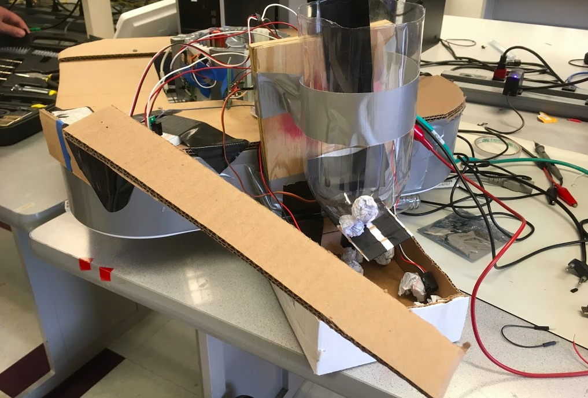
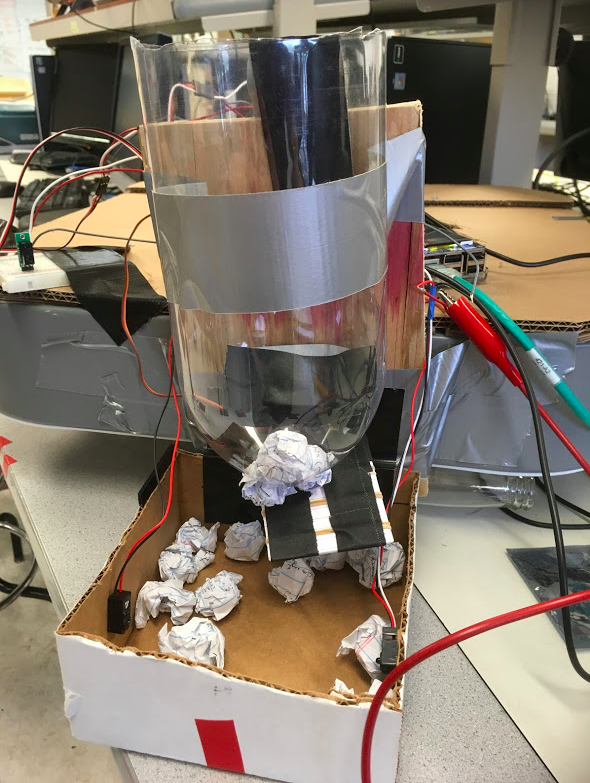
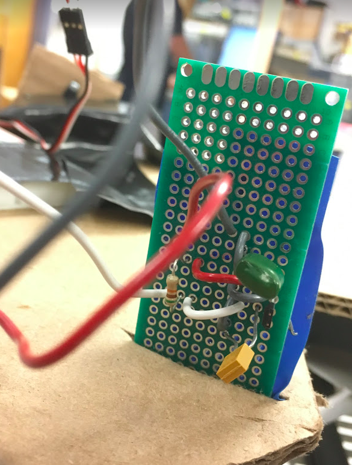
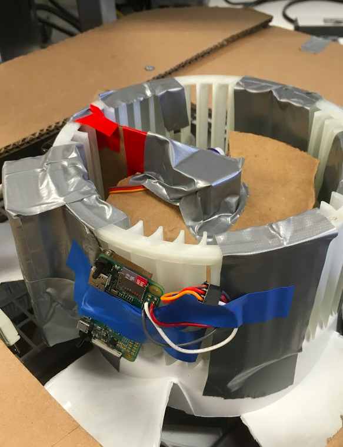
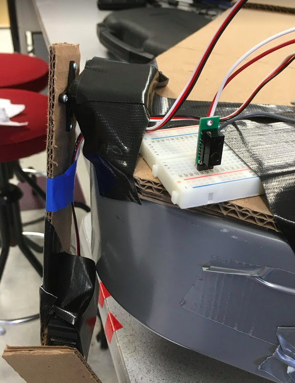

Design and Testing
Construction
We built our project physically in the same pattern that we wrote our software, incrementally. We started off with the food refill system, for which a few different physical components were needed. The first was a reservoir to hold the food that will be used to refill the bowl. This tank has to be larger than the food bowl so it can hold multiple refills at once, and also had to be shaped in a way that would facilitate easy dispensing of its contents. Our original plan was to make this tank out of wood, however to save time and material cost, we decided instead to use a 2 liter soda bottle, with both ends cut off. The next step was to build a sort of valve which we could use to control whether food is allowed to leave the tank or not. To fill this purpose we cut a hole into the bottom of the bottle and embedded a mini servo motor into it. We then made a small door out of index cards and attached it to the arm of the servo. Then by controlling the position of the servo motor we could either allow the food to fall into the bowl or not. For the bowl, we cut the bottom off of a cardboard box. We then screwed a pair of IR sensors directly across from each other, one emitter and one receiver. The line between the two is broken when the food fills above that height of the bowl, and we know we can close the door again.
For the fetch part of our project, the first step of the construction was to create cylindrical piece to place the ball in as it accelerates. Rather than design one, we decided to buy a squirrel cage blower on the suggestion of Prof Skovira. To keep the ball in place as the cage accelerates, we cut a piece of cardboard to size and wedged it into one of the slits of the cage and secured it with tape. We also built a small platform to keep the ball level inside the cage because the original bottom of the cage was sloped. We found that this change helped the ball move more freely to the wall we had built in when the cage was spinning. In order to lift the ball up over the edge of the cage after reaching top speed, we cut a hole in that platform and replaced it with a small lever attached to a servo. With this adjustment the ball would now fall onto the lever instead of remaining on the platform, so we could lift the ball out of the cage using the servo motor. To control the servo we decided to use a Raspberry Pi Zero, which would communicate wirelessly to our other Pi. The only space that the Pi Zero would fit was on the outside of the cage, so we taped it to the side with electrical tape. To power this Pi we attached a portable battery pack with a USB power connection. However the battery was fairly heavy, so we decided to counter-balance it with another battery on the opposite side of the cage. We decided that the other components were light enough to not cause much of a balance issue.
To actually spin the cage, our plan was to use the motor of a box fan. However we found that it was difficult to securely attach the cage to the motor, and additionally the motor struggled to actually spin the cage when it was attached by itself. Instead we found that we could tape the cage to the center of the fan blades which worked very well. To cover up the fan blades, we decided to put the motor back into the fan and just replace one side of the cover with cardboard, with an opening big enough for the cage attached to the motor to protrude. The body of the fan also gave us a base to build the rest of our project off of. We attached a plank of wood to the side of the fan and then attached the food tank to that, and placed the bowl underneath.
For the last part of the project, the petting arm, we used a long strip of cardboard which we cut into two pieces are the arm, and two standard servo motors as the joints. We used the cross-shaped attachment for the servo and screwed it to the cardboard. We were worried that the servo might not have the torque required to hold up both arms and the other servo, so we made the “upper” arm shorter to reduce the required torque. We attached the full arm to the body of the fan on the corner near the food tank, with the idea that a dog could be pet as it eats.
Figure 2: Finished Franklin
Notifications
Every action in Franklin provides a notification to the user with regards to whether the food is being refilled, your dog is playing fetch, or Franklin is petting your dog. This is all done with the Twilio library, which provides the ability to send SMS messages to any phone number. The library itself is very simple to use (the tutorial is linked below in “Resources”) and only required a Twilio account to get a free phone number from which to send the SMS messages. The overview of messages.py is that an authorized connection to the Twilio Client object is made using a valid account’s SSID and authorization token. Once that’s been done, messages can now be sent using a REST API call.
The only drawback is that messages on a free Twilio account can only be sent to the phone number on the account itself. Additionally, Twilio can be easily hacked if your authorization token and SSID are posted publicly (i.e. on GitHub)—we learned this the hard way. Make sure to keep your tokens safe, whether through encryption or a private code repository.
Food Refill
The idea behind the food refill system is that there can be a specific time hard coded into a python script which will open the food tank at a specific time, and leave it open until the food bowl is full. To get the time, we use the datetime Python library. We call the datatime.now() function, and extract the hour and minute from the tuple that gets returned and compare to the pre-programmed time. If they match up we open the tank by changing the PWM signal using the RPi.GPIO library. Once opened, we begin polling the GPIO pin connected to the linebreak IR receiver. Once we read that the pin value is low, indicating the bowl is full, we again change the PWM signal to the original value.
Figure 3: Food dispenser system
We tested the different parts of this system incrementally, beginning with correctly identifying a specific time. We then moved on to calibrating the PWM to move the servo to the correct positions. Once we had the servo opening the tank at the correct time, we started working with the IR sensors. Again we begin by just seeing if we could identify a break by printing to the display. Once this was working we integrated it into the rest of the code so we could change the PWM signal upon the line break.
Fetch
The system we built to implement the fetch functionality of Franklin involved a motorized container to spin and catch the ball, as well as a mechanism to throw the ball out. The former was accomplished with a cage, typically used in cars, attached to a motor from a box fan. With a little extra cardboard and duct tape, the cage was made to effectively contain the ping pong ball by maintaining it at a height level that wouldn’t get the ball thrown out naturally while also allowing some range of motion to help our mechanism throw the ball. This mechanism involved a triangle of cardboard attached to a mini servo located in the central axis of the cage.
The flow of the system first started with turning on the fan motor to get the cage spinning. Attached to the cage was a stack of magnets, and these were used to determine how fast the cage was spinning. As the cage spun, these magnets passed by a hall effect sensor, which outputs a voltage based on the presence of a magnetic field. If a magnetic field was detected by the hall effect sensor (within a range of about two centimeters), it would output a low voltage into one of the GPIO pins of the Pi 3.

Figure 4: Given circuit from hall effect sensor datasheet
Every time the hall effect sensor registered a magnetic field, the time at which this occurred was stored in a two-element array. This array was continually updated to hold the two most recent times the sensor was triggered. These readings allowed for us to calculate the velocity of the cage using our function calculate(); classical mechanics tells us that velocity is equal to distance divided by time, so we only needed those two values at any point to calculate. The distance was simply the circumference of the cage, found to be 15.24 centimeters. The period was the difference between the two times stored in the array mentioned earlier.
Figure 5: Close-up of soldered circuit
The calculate() function was called using fetchCallback(), a GPIO callback function attached both the rising and falling edge of GPIO 12, the pin connected to the output of the hall effect sensor. This callback function was linked to both edges to increase the efficiency of the hall effect sensor—later on in the project, we noticed that if many sensors and servos were running simultaneously, the hall effect sensor would only trigger if no magnet was present. Having the callback function triggered on both the rising and falling edge could allow for us to change the code around and have all of the functionality surrounding fetch be initiated when the hall effect sensor left the stack of magnets, not when it first saw it.
Within fetchCallback() the velocity of the cage was calculated and then a conditional was placed on it to see if the conditions were right to throw the ball. In our case, that was done by checking to see if the global variable velocity was holding a value greater than 200 cm/s. If that was true, then a series of steps were taken to throw the ball.
While the main Pi, our Pi 3, was running the code in fetch.py to read the hall effect sensor and calculate the cage’s velocity, there was another Pi on Franklin running its own program, client.py—this was a Raspberry Pi Zero W, a smaller Pi with WiFi functionality. The Pi Zero was headless, meaning that it wasn’t attached to a keyboard, mouse, monitor, or Ethernet connection. Instead, it was hooked up to a handheld power supply and attached to the side of the cage. Using an additional Pi meant that the servo within the cage could be controlled without the fear of tangled wires or broken equipment.
The sole purpose of the Pi Zero was to trigger the micro servo, specifically an SG90, and throw the ball. However, our design relied on the Pi 3 to determine if the cage was spinning at a high enough rate. This meant that some sort of data connection needed to be established between the two: this was done using a socket. Sockets allow connection between two nodes, one listening and one establishing the connection for data transfer, on the same network to communicate with each other. The Pi Zero was the server, meaning that it opened up a specific port and was waiting for a connection, while the Pi 3 was the client, the node that would reach out to establish the socket connection. Once client.py was run, it bound itself to port 5725 and waited for a connection, which would be created by the Pi 3 saw that the cage was spinning at a rate faster than 200 cm/s. The socket connection occurring then alerted the Pi Zero that it was time to flip the ball out of the cage, and the micro servo was moved using a PWM signal.
Figure 6: Rotating cage with Pi Zero attached
Petting Arm
This feature of Franklin was the simplest to implement: it only needed to detect if a pet was nearby and then respond accordingly. We used a Pololu digital distance sensor to output a low voltage if it saw an object within the range of two to ten centimeters. Similar to the fetchCallback() function, the GPIO pin connected to the distance sensor’s output was set to call the function petCallback() on both the rising and falling edges of its output. Within that function was a while loop to check and see if the voltage output was still low; this was done to ensure that the petting motion of our arm was continuous while the object was still in range. The motion of the arm was controlled using two standard parallax servos, each connected to a separate part of the arm. The lower servo had a more limited range of motion, oscillating between PWM pulse widths of 1.45 ms and 1.55 ms, while the upper servo switched between 1.3 ms and 1.7 ms.
Figure 7: Petting arm with distance sensor circuit